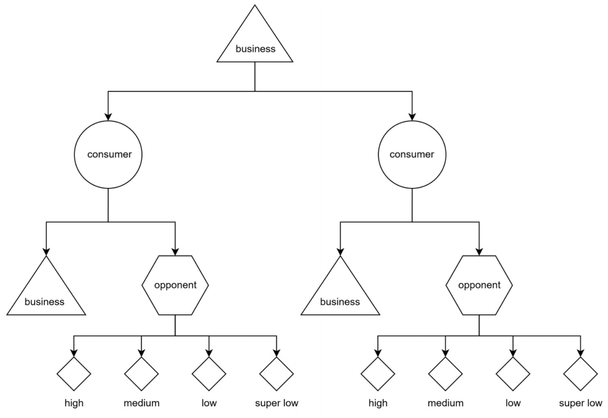
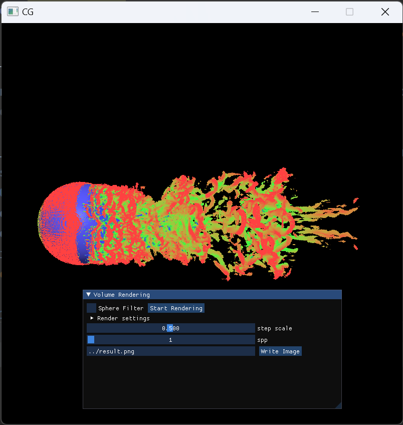

|
Hui Ren (任辉) I am a junior undergraduate at ShanghaiTech University and an exchange student at Massachusetts Institute of Technology (MIT) in Spring 2024, majoring in computer science and technology. My current overall GPA is 3.92/4.0, which ranks 2/230 in the school at ShanghaiTech. I got full GPA in all CS and Math courses, with A+ grades in almost all CS courses. And I got A+ in all courses attended at MIT. From Feb. 2023, I acted as an undergraduate research assistant in PLUS Lab at ShanghaiTech University, advised by Prof. Xuming He. During my exchanging period at MIT, I am very fortunate to join the MIT CSAIL Vision Group and advised by Prof. Antonio Torralba and Prof. David Bau. Email(ShanghaiTech) / CV / Github / LinkedIn / X |
{kind=link}
ResearchI am interested in Computer Vision and Machine Learning. My current research work focuses on generative models, especially the editing of text-to-image diffusion models. Previously, I studied optimal transport, especially its application in deep clustering and 3D unsupervised segmentation in imbalanced scenarios. I am looking forward to pursuing a Ph.D. degree in Computer Vision and Machine Learning in Fall 2025. Currently, I am looking for a research internship position starting this summer(2024). |
News
|
PublicationsNote: * indicates equal contribution. |

|
P2OT: Progressive Partial Optimal Transport for Deep Imbalanced
Clustering
Chuyu Zhang*, Hui Ren*, Xuming He ICLR, 2024 Paper / Code |

|
SP2OT: Semantic-Regularized Progressive Partial Optimal Transport for Imbalanced Clustering
Chuyu Zhang, Hui Ren, Xuming He Under Review Paper / Code |

|
Dual-level Adaptive Self-Labeling for Novel Class Discovery in Point Cloud Segmentation
Ruijie Xu*, Chuyu Zhang*, Hui Ren, Xuming He Under Review |

|
Cascaded Sparse Feature Propagation Network for Interactive Segmentation
Chuyu Zhang*, Chuanyang Hu*, Hui Ren, Yongfei Liu, Xuming He BMVC, 2023 Paper / Code |
Selected course projects |
|

|
Business War Policy Exploration
ShanghaiTech CS181: Artificial Intelligence We proposed a business war model in which restaurants must balance attracting customers and making profits to maximize revenue and even defeat competitors. We implemented and compared various AI strategies, including Expectimax search, Neural-Network prediction, and Reinforcement learning algorithms to explore the optimal policy. Report / Code |
|

|
Ray tracing based multi-resolution iso-surface rendering
ShanghaiTech CS171: Computer Graphics I We rendered the iso-surface of vortices in a multi-resolution fluid velocity field based on ExaBricks data structure. We implemented a bitmap accelerated KD-tree and BVH for multi-resolution data to support fast ray marching. We proposed an advanced adaptive sampling strategy to solve the problem of rendering surface discontinuity, improving the rendering speed by more than 50x at the same precision. We created a UI for conveniently adjusting the parameters and rendering. Report / Code |
Selected Awards and Honors
|
© 2023-2024 Hui Ren